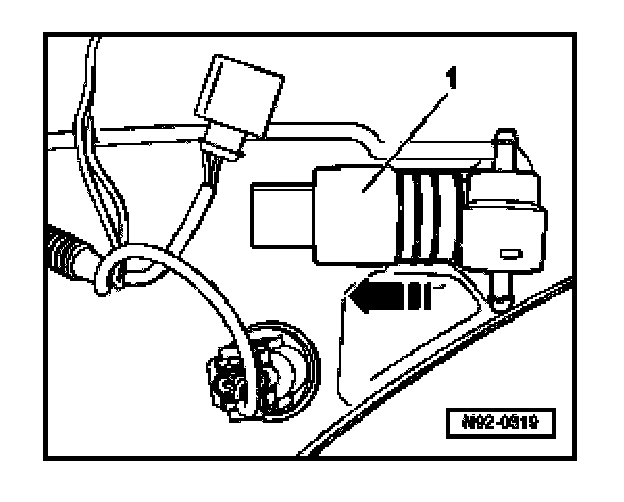

Windshield Washer Pump: Service and Repair
Windshield Washer Pump, Removing And Installing
Windshield Washer Pump -V5- is installed on the windshield washer reservoir in the right wheel well.
Removing
CAUTION:
Before removing reservoir:
- Switch off all electrical consumers.
- Switch ignition off and remove ignition key.
- Remove windshield and headlight washer reservior.

- Pull pump -1- out of reservoir -arrow-.
Installing
Install in reverse order of removal.